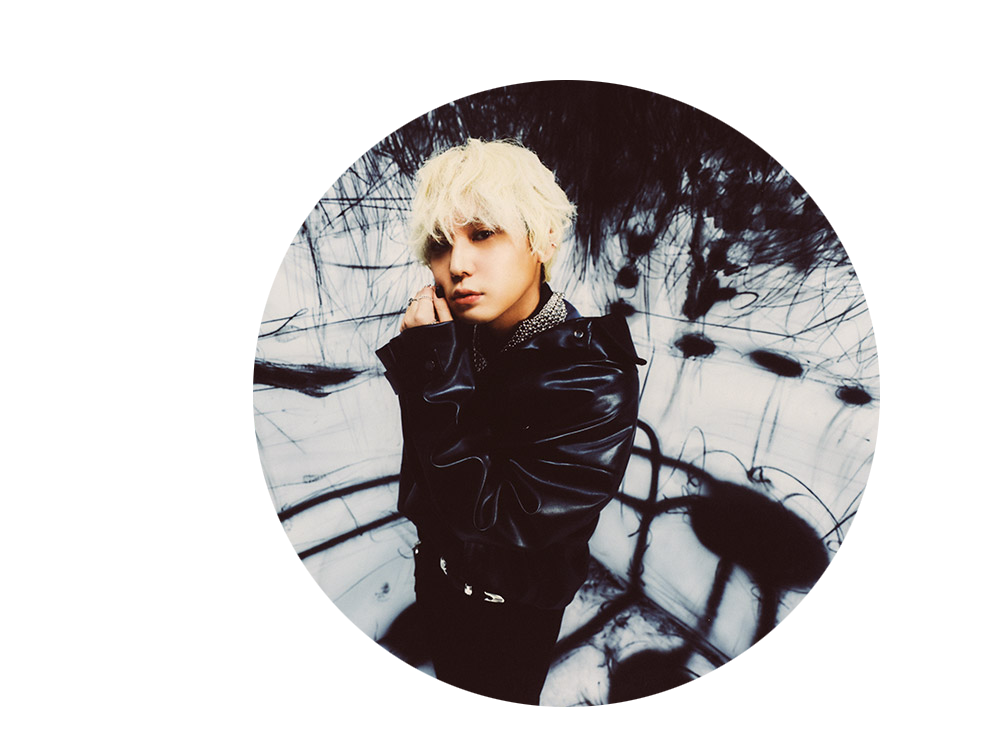
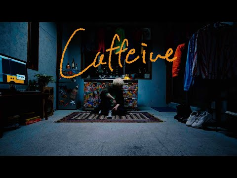

king gnu
King Gnuは、2017年に結成された日本のミクスチャー・ロックバンド。所属レーベルはアリオラジャパン。 2013年、常田大希を中心としたバンド「Srv.Vinci」（サーバ・ヴィンチ）の活動を開始。以後、メンバー変更を経て、2015年に現在の4人体制となった。 2017年、「King Gnu（キング・ヌー）」に改名。 2019年1月16日、2ndアルバム『Sympa』でメジャーデビュー。

prayer X
日本のミクスチャー・ロックバンドKing Gnuの1作目のシングル。 フジテレビ“ノイタミナ”で放送された「BANANA FISH」のエンディングテーマである。 2018年にYouTubeで配信され、2025年11月25日時点での再生回数は5073万回である。 人々は生きていく中で苦悩し、もがき、心の何処かで祈っている。その先に待っているのが絶望なのか救いなのかはわからない。でも今は祈ることしか出来ない。 『Prayer X』は誰しもが持つ葛藤と祈りの歌である。 『Prayer X』のMVは、アニメーターの山田遼志とKing Gnuのクリエイティブワークを手がけるPERIMETRONの映像ディレクター・OSRINがタッグを組んで制作し、 「強制された栄光」をテーマに1人の男が周囲に翻弄されながら破滅していく姿を描いている。 私がking gnuのファンになったきっかけの曲であり、儚さと力強さを併せ持つ歌声と、不気味で不穏なMVによって、楽曲の作り出す世界から目を離せなくなる。
----- SNS -----

秋山黄色
秋山黄色は、1996年3月11日生まれ栃木県出身。楽曲の全てを手掛けるソロアーティスト。 中学生の時、テレビアニメ『けいおん!』に影響されてベースを弾き始め、高校1年生の時に初のオリジナル曲を制作。 その後YouTubeやSound Cloudなどネット上で楽曲や映像を発表するようになり、2017年12月から宇都宮と東京を中心にライブ活動を開始。

caffeine
2020年リリースの1stアルバム『From DROPOUT』に収録の楽曲。 2020年にYouTubeで配信され、2025年11月25日時点での再生回数は3544万回である。 昨年9月には、PEOPLE 1のDeuを迎え、新たに歌詞を共作、新たにアレンジを加えた「Caffeine Remix feat. Deu」をリリース。 「Caffeine」は、18、19歳の頃に書かれた楽曲であり、壮大な音楽の上では感動する話をしたくないという、音楽に対する天邪鬼な性質を存分に発揮した作品となっている。 ポップなリズムの上で重いこと、どうしようもないことを言う、秋山黄色を象徴する曲である。 イントロの癖になる軽やかなギターの音色によって「Caffeine」の世界観に一気に引き込まれる作品である。 初めて聞いた時からずっと好きな曲であり、様々なジャンルの曲を聞くが、定期的にこの曲を聞きたくなり視聴している。何度聞いても飽きない名曲である。
----- SNS -----